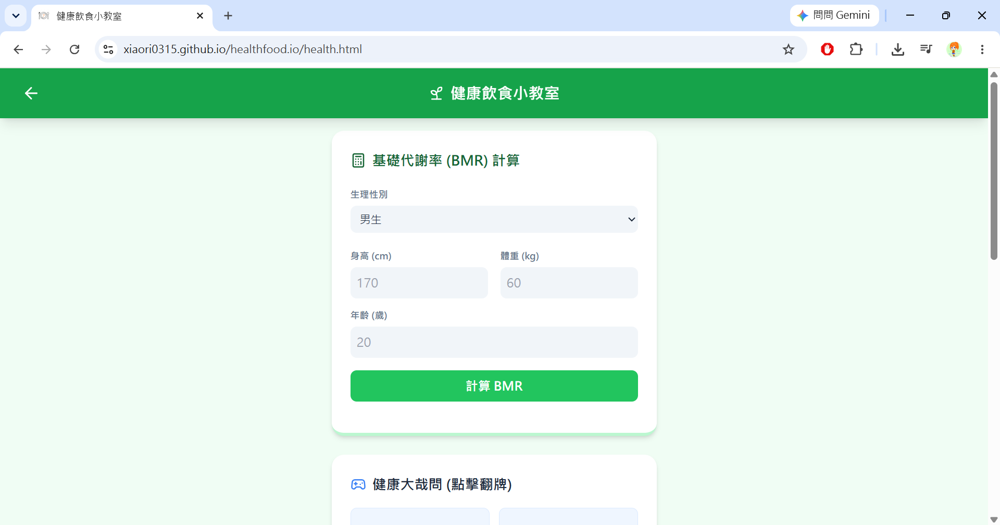
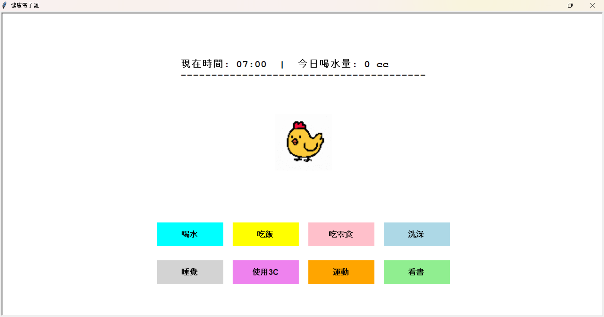
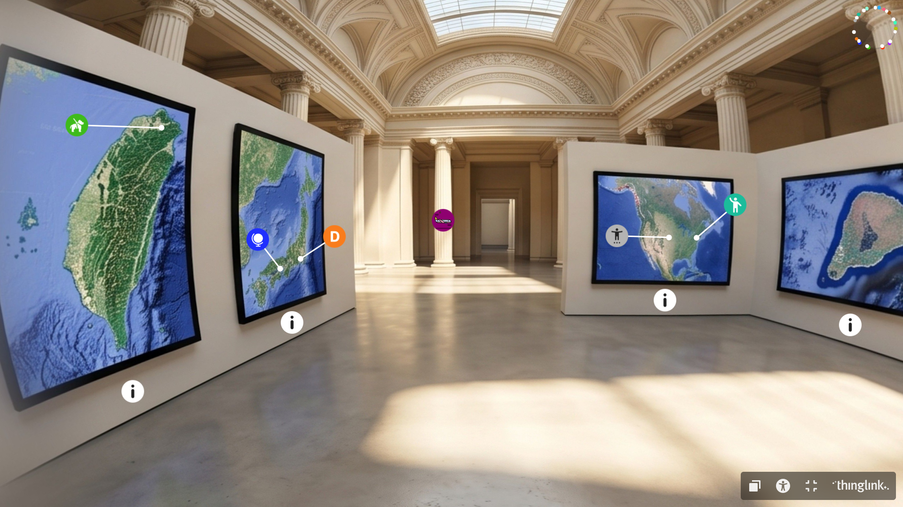
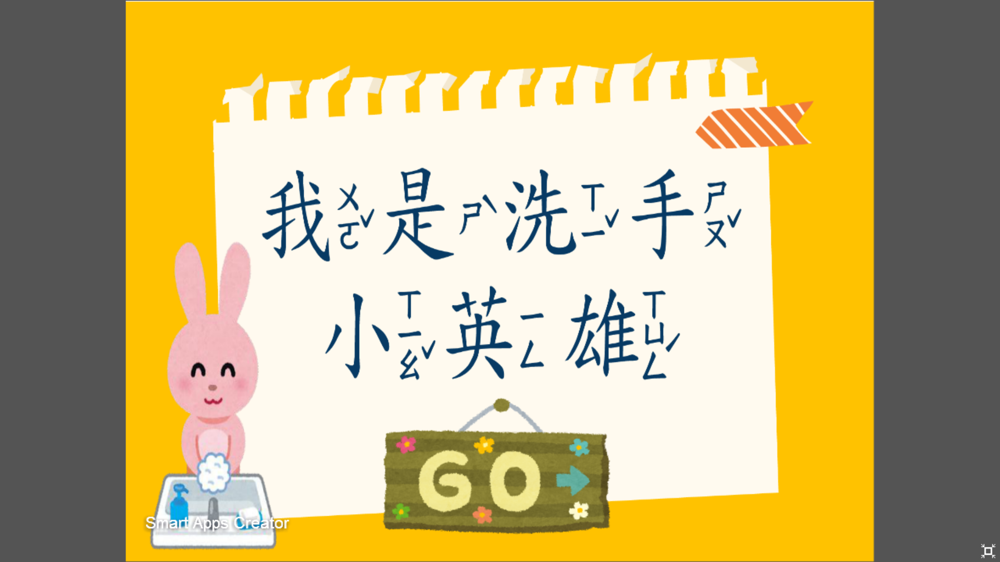

建議尺寸 16:9欸今天午餐吃什麼？
整合「校園周邊店家抽籤輪盤」、「基礎代謝率 (BMR) 計算機」與「健康飲食衛教小遊戲」。透過日常生活情境引導使用者了解熱量平衡與均衡飲食的重要性。

建議尺寸 16:9整合「校園周邊店家抽籤輪盤」、「基礎代謝率 (BMR) 計算機」與「健康飲食衛教小遊戲」。透過日常生活情境引導使用者了解熱量平衡與均衡飲食的重要性。

建議尺寸 16:9以復古電子寵物養成機制為靈感打造的生活衛教小遊戲。學習者的日常作息與飲食選擇將連動電子雞的狀態指標，讓健康知識學習更具互動性與持續動力。

an> 建議尺寸 16:9專為歷史與地理文化設計的沉浸式 VR 教材。讓學習者突破教室場域限制，在 360 度虛擬場景中探索各國特色風貌與人文古蹟。

建議尺寸 16:9針對幼兒園學童量身打造的趣味洗手衛教教材。藉由生動活潑的角色互動引導與步驟拆解，使孩子在遊戲氛圍中建立正確的清潔衛生習慣。